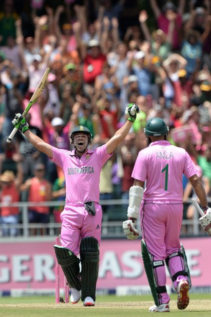
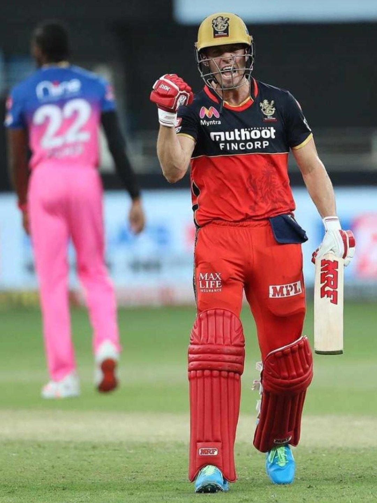

AB
Fanpage

international
- 1 - AB de Villiers is the only batsman to score more than 2000 runs at an average of 50 plus and at a strike rate of 100 plus in ODI cricket. He scored 9577 runs at an average of 53.50 and at a strike rate of 101.09 in 228 ODIs.
- 3 - AB de Villiers won the ICC ODI Cricketer of the Year award three times in his career - the joint-most by any cricketer along with Virat Kohli.
- 16 - AB de Villiers holds the record of the fastest fifty in 16 balls in ODI cricket. He achieved this feat against West Indies in Johannesburg in 2015.
- 31 - AB de Villiers smashed 31 balls ODI hundred against West Indies in Johannesburg in 2015 - the fastest ever ODI hundred of all time.
- 47 - AB de Villiers scored 47 hundreds in international cricket - the third-most by a South African and overall tenth most in the world.
- 64 - In World Cup, 2015 AB de Villiers smashed 150 runs in just 64 balls which is the fastest ever 150 of all time in ODI cricket.
- 1207 - With 1207 runs AB de Villiers is the fifth leading run-scorer of all time in ODI cricket world cups. He scored 1207 runs at 63.52 and at a strike rate of 117.29 with 4 hundreds and 6 fifties in 23 World Cup matches.

Indian Premier League
- AB deVilliers holds the record of winning the most no.(25*) of "Man of the Match" awards in the history of IPL
- AB's score of 133 vs Mumbai Indians in 2015 is the highest ever individual score by a non-opener.
- AB with Virat Kohli holds the record of two highest partnerships in the history of IPL(229 and 215)
- In the IPL 2016 season, AB De Villiers took 19 catches as a fielder, which is the most in any season by any fielder.
- AB De Villiers has been a consistent player to be part of the Indian Premier League since its inception in 2008. He had a record for playing the most matches in the IPL by an overseas player.
- AB de Villiers became the sixth batsman in the history of the Indian Premier League (IPL) to score 5000 runs and third fastest to do so(161 innings)